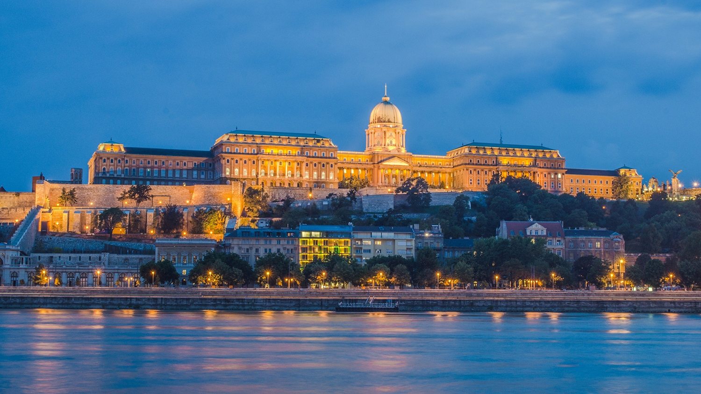
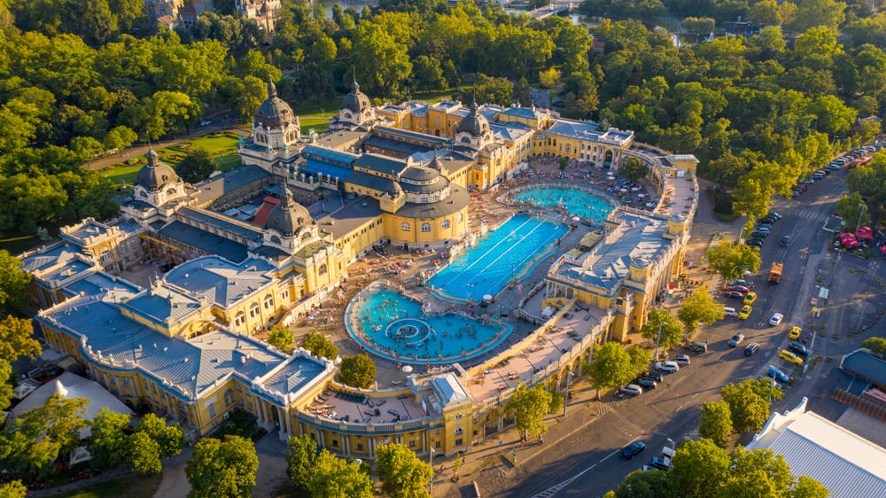
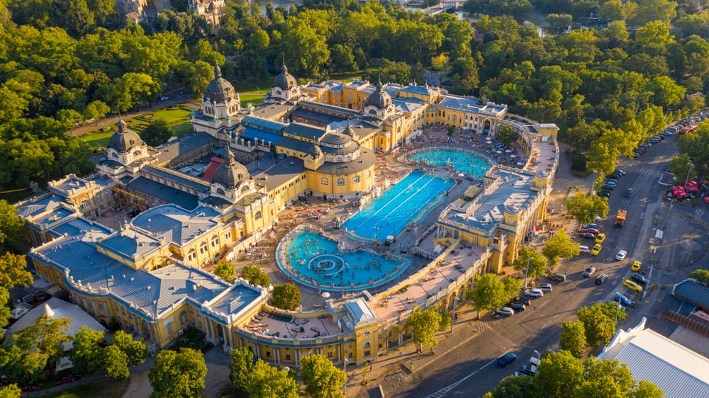
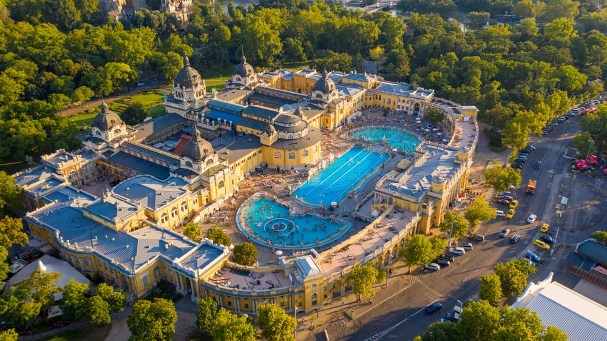

Top Attractions

 



- Buda Castle: A UNESCO World Heritage Site with stunning views of the city.
- Fisherman’s Bastion: Fairytale-like lookout towers.
- Széchenyi Thermal Bath: One of Europe’s largest thermal spas.
- Parliament Building: A neo-Gothic masterpiece on the Danube.